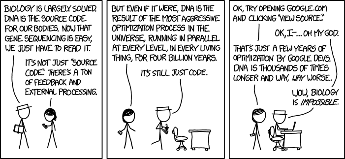

Breno Livio Silva de Almeida — Computational Biologist
I am a dual-degree PhD candidate at the ICMC (Institute of Mathematics and Computer Sciences) at the University of São Paulo (USP) and at Leipzig University. My thesis is entitled Decoding the Language of Life: Towards the Limits of Biological Sequence Representation and looks at how DNA and protein sequences can be represented in an alignment-free manner for machine learning. It looks at what biological information is captured by different representations and where the limits lie. My work spans handcrafted biological descriptors, foundation models, automated machine learning and environmental metagenomics, with a particular focus on making the computational methods more accessible. The work is funded by FAPESP (process #2024/10958-1) and the Google PhD Fellowship in Health Research.
As part of my doctoral research, I spent a year as a Research Assistant at the Helmholtz Centre for Environmental Research (UFZ) in the Microbial Data Science group (led by Dr Ulisses Rocha, Department of Computational Biology and Chemistry). That period is part of an ongoing collaboration with the UFZ, which will run throughout my PhD. The work involves applying my PhD research to microbial systems and large-scale environmental data with a focus on protein function discovery and tools for the reproducible deposition of metagenome-assembled genomes and their associated metadata.
Before my PhD, I completed my BSc Degree in Computer Science at the ICMC-USP, where I first explored machine-learning applications in bioinformatics. During this time, I had the privilege of working under the guidance of Prof. Dr. André de Carvalho, who played an important role in shaping my research interests. Now, as a PhD candidate, I am fortunate to pursue this academic path with him as one of my co-advisors, alongside Prof. Dr. Peter Stadler from Leipzig University.


Research Interests
My interest in using computer science for social good started in high school when I built a very simple chatbot to support autism spectrum interventions. In college, my interest in biology and nutrition led me to go and look at some of the research into the links between the human gut microbiome, autism and bipolar disorder, drawing on machine learning and bioinformatics (and interestingly enough, I found out quite early in my PhD that I am autistic myself).
Since 2021 I've been working on this by developing computational methods and accessible tools for biological research. My work combines machine learning, bioinformatics and open-source software aimed at helping researchers to make sense of their biological data, to find new knowledge and to make their analysis more reproducible.
My current research interests, in a more technical version:
My research is about a representation problem: how much biologically relevant information can alignment-free methods recover from a DNA or protein sequence, and what remains beyond their reach? I compare handcrafted descriptors (which encode explicit compositional, physicochemical and mathematical properties) and embeddings learned by foundation models (which learn higher-order patterns from large collections of sequences). I look at what each representation encodes, where it breaks down and how useful it is across different datasets and evolutionary distances.
I use automated machine learning to select the appropriate representations and predictive models for individual biological tasks, thereby reducing the amount of expertise and resources required to apply these methods. I'm also using protein language models and hierarchical classification to examine proteins that resist annotation with traditional alignment-based methods in environmental metagenomes, and I'm building the infrastructure to enable reproducible public deposition of the underlying genomes and associated ecological metadata. The end game is to work out the representational limits of sequence-based prediction and to determine when additional context or experimental validation is required.
Now, in a less technical version that I could explain to my mom and impress her:
Proteins are molecules that do all sorts of things in humans, in other organisms and in the environment. A lot of them still have no known function, though. They're sometimes referred to as “functional dark matter” (although I'm told some people are quite against that term!).
The standard way of working out what a protein does is to compare its sequence to that of proteins whose function we already know. That works pretty well for proteins that are very similar to the ones we have a handle on, but it can fail to pick up proteins which have changed significantly through evolution. To the comparison tool they may appear entirely unrelated even though they might have similar structure or function.
My thesis is about how we can turn a biological sequence into information that a computer can learn from. One approach is to describe the properties that we already know how to measure (e.g. composition, physicochemical properties). Another approach is to use language models which learn the patterns in the data from millions of sequences (in much the same way that language models learn the relationships between words). Neither of these approaches is complete so I look at what each one tells us and where each one breaks down.
Awards and Recognition
HIDA-Sponsored Participant – The Carpentries Instructor Training: Selected in 2026 for one of 15 annually sponsored training places offered by the Helmholtz Information & Data Science Academy (HIDA) to Helmholtz researchers. The program provides evidence-based training in scientific and data science instruction and leads toward certification as a Carpentries Instructor.
ISME Scholar Mobility Fund: Awarded in 2025 with €2,300 in funding for a research period in July 2026 at the Helmholtz Centre for Environmental Research (UFZ) in Leipzig, Germany.
Google PhD Fellowship: Received the 2025 Google Latin America PhD Fellowship in Health. The Google PhD Fellowship Program was created to recognize outstanding graduate students doing exceptional and innovative research in areas relevant to computer science and related fields. Find all the fellows here: Google PhD Fellowship 2025 recipients.
J. F. Marar Artificial Intelligence Prize for Undergraduate Research: Winner project "BioDeepFuse: Empowering Researchers in Life Sciences with Deep Learning". Project was selected winner considering criteria such as academic and social relevance, adherence to the United Nations' Sustainable Development Goals (SDGs), and academic performance. More details in Portuguese here: News shared by the University of São Paulo.
Prototypes for Humanity: BioAutoML was selected by Prototypes for Humanity as one of the top 100 projects from nearly 3,000 applications submitted by graduates from over 100 countries. The project received funding for participation and was presented at the international festival in Dubai. More information is available at: BioAutoML on the event website.